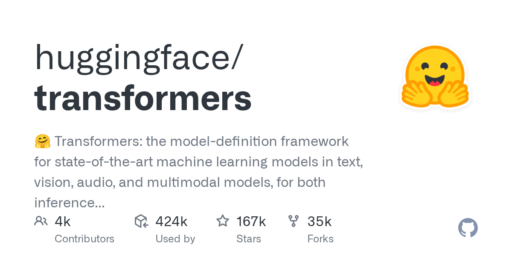

05 GitHub
huggingface/transformers
10월 6일 v5.19.0이 나온 AI 모델 공용 도구 모음
★ 167,043이번 주 +217PythonApache-2.0 사내 사용 가능릴리스 v5.19.0 (10.06)최근 활동 10.08테스트 있음예제 있음AGENTS.md 있음

Transformers는 텍스트, 컴퓨터 비전, 오디오, 영상, 멀티모달 모델을 추론과 학습에 쓰도록 모델 정의를 모아 둔 저장소다. Hugging Face Hub에는 이 저장소로 쓸 수 있는 체크포인트가 100만 개 이상 올라 있다고 한다. 설치에는 Python 3.10 이상과 PyTorch 2.5 이상이 필요하다. 최신 릴리스는 10월 6일에 나온 v5.19.0이며, 이번 릴리스의 변경 내용은 확인되지 않았다.
무엇을 하는 물건인가
huggingface/transformers는 글, 이미지, 음성을 다루는 AI 모델의 구조를 한곳에 모아 두고 불러 쓰게 해 주는 파이썬 도구 모음이다. 여러 회사 제품이 같은 규격의 콘센트를 쓰도록 맞춰 두는 식으로, 모델마다 제각각이던 설계를 하나의 형식으로 통일한다. 이 도구가 없으면 모델마다 공개된 코드를 따로 내려받아 입력 형식과 실행 방식을 하나씩 맞춰야 한다.
스펙과 도입 조건
- 언어·런타임: Python 3.10 이상과 PyTorch 2.5 이상에서 동작한다.
- 설치 형태: pip나 uv로 설치하는 패키지이며, 가상환경에 설치하라고 안내한다. 최신 변경분이 필요하면 소스에서 설치할 수 있지만 불안정할 수 있다고 적혀 있다. 명령줄에서 모델과 대화하는 기능도 있다.
- 의존 서비스: 모델은 처음 쓸 때 내려받아 캐시에 보관한다. 외부 API 키가 필요한지는 밝혀져 있지 않다.
- 라이선스: Apache 2.0이다.
- 성숙도: 최신 릴리스는 v5.19.0(2026년 10월 6일)이다. 저장소는 2018년에 만들어졌고, 테스트와 예제가 있는 것으로 확인된다.
대안 대비 차별점
transformers는 글·이미지·음성 모델의 구조 정의를 한곳에 모아, 다른 도구들이 같은 정의를 가져다 쓰게 하는 것을 목표로 한다. transformers가 정의를 지원하는 모델은 학습 도구와 추론Inference — 학습을 마친 모델에 입력을 넣어 결과를 얻는 단계 엔진, llama.cpp 같은 인접 도구 대부분과 호환된다고 밝혔다. 호환 대상으로 저장소 설명에는 학습 도구 Axolotl, Unsloth, DeepSpeed, 추론 엔진 vLLM, SGLang, TGI가 적혀 있다.
쓰지 말아야 할 경우도 적어 두었다. 이 저장소는 신경망 부품 모음이 아니며, 연구자가 모델별로 빠르게 고치도록 모델 파일에 추상화를 일부러 더하지 않았다. 학습 기능은 이 저장소가 제공하는 PyTorch 모델에 맞춰 있어, 범용 머신러닝 학습 코드에는 Accelerate 같은 다른 도구를 쓰라고 안내한다. 예제 스크립트는 그대로 돌아가지 않을 수 있어 용도에 맞게 고쳐야 한다.
이럴 때 쓰면 좋다
- 고객 상담 녹취를 음성 인식 모델로 글로 옮겨 문의 유형 분류의 앞 단계를 만들 때 쓴다.
- 사내 서버에 모델 후보를 내려받아 규정 문서 요약 성능을 후보별로 비교할 때 쓴다.
- 대출 신청 서류 사진을 유형별로 분류하는 이미지 모델을 시험할 때 쓴다.
핵심 기능
- Pipeline API가 텍스트, 오디오, 이미지, 멀티모달 작업의 입력 전처리를 맡아, 모델 이름만 지정하면 결과를 돌려준다.
- 모든 사전학습 모델에 같은 API를 쓰며, Hugging Face Hub에는 쓸 수 있는 체크포인트Checkpoint — 학습을 마친 모델의 값을 저장해 둔 파일가 100만 개 이상 있다.
- 추론과 학습을 모두 지원하고, 모델 하나를 PyTorch, JAX, TF2.0 사이에서 옮겨 쓸 수 있다고 밝혔다.
사내 도입 체크
- 외부 API 호출과 데이터 반출: 모델을 처음 쓸 때 외부에서 내려받는다고 적혀 있다. 사내망에서 내려받는 절차와 입력 데이터의 외부 전송 여부는 확인 필요.
- 유지보수 주체: Hugging Face가 관리하는 조직 저장소이며, 최신 릴리스가 2026년 10월 6일이다.
- 이번 릴리스: 변경 내용과 이전 버전에서 올릴 때의 호환성은 확인 필요.
- 상용 대체 제품: 확인 필요.
원문 정보
제목: huggingface/transformers
최근 활동: 2026.10.08